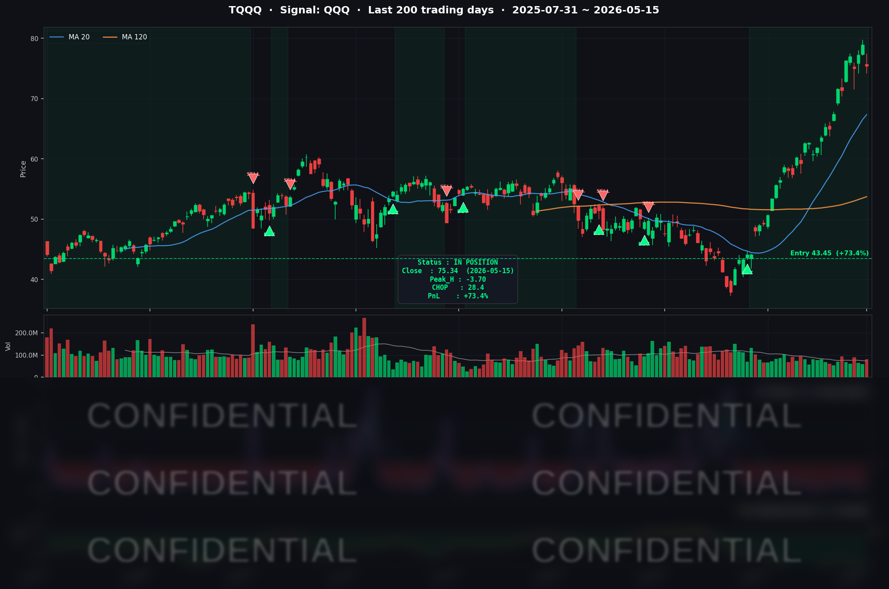

인플레이션 우려가 다시 올라오며 미국 10년물 국채금리가 치솟았습니다. 금리 움직임과 주가 흐름을 잘 관찰하시기 바랍니다.
나스닥 주식의 최대 적은 "금리" 입니다. 앞으로 연준 인사들의 발언에 시장이 크게 움직일 것 같내요.
📊 오늘의 매매 신호
| 항목 | 내용 |
|---|---|
| 오늘 할 일 | ✅ 아무것도 안 해도 됩니다 |
| 포지션 상태 | 📈 TQQQ 보유 중 (IN POSITION) |
| 매수 진입일 | 2026-04-07 (40일째) |
| 진입가 → 현재가 | $43.45 → $75.34 |
| 현재 포지션 수익 | +73.39% |
TQQQ 시그널 — IN POSITION
현재 상태: 매수 포지션 유지 중 | 누적 수익률 +73.39%

시그널이 말하는 것
오늘 나스닥이 -1.54% 하락하는 충격이 있었습니다. 그러나 AI 모델이 TQQQ에 대해 감지하는 신호는 흔들리지 않았습니다.
이유는 이렇습니다. AI 모델은 하루의 등락을 보는 것이 아니라, 3월 31일 진입 이후 46일간 쌓인 누적 추세의 흐름을 판단합니다. 오늘 -1.54%의 충격은 그 누적된 추세 버퍼 안에서 충분히 흡수됐습니다.
현재 모델은 강한 상승 추세를 감지하고 있으며, 청산 신호까지 충분한 여유 구간을 유지하고 있습니다. 추세 약화 신호도 없습니다.
단, 5월 20일 NVIDIA 실적 발표가 이번 주의 가장 중요한 포트폴리오 분기점 이벤트입니다. 그 결과에 따라 시그널의 방향이 달라질 수 있습니다.
오늘 미국 마감 — 주요 이슈 서머리
지수 마감
| 지수 | 종가 | 등락률 |
|---|---|---|
| S&P 500 | 7,408.50 | -1.24% |
| 나스닥 종합 | 26,225.14 | -1.54% |
| 다우존스 | 49,526.17 | -1.07% (-537p) |
전일 사상 최고치를 경신했던 세 지수가 나란히 하락 반전했습니다. 트럼프-시진핑 정상회담 실망, 금리 급등, 인플레이션 재가속이 삼중 충격으로 작용했습니다.
국채 금리 & 연준
| 국채 만기 | 수익률 | 전일 대비 |
|---|---|---|
| 2년물 | 4.09% | 약 +6~8bp |
| 10년물 | 4.595% | +14bp |
| 30년물 | 5.121% | +11bp |
오늘의 금리 움직임은 매우 이례적이었습니다. 10년물이 하루 만에 14bp나 급등하면서, 나스닥 기술주·성장주에 직접적인 밸류에이션 부담을 가했습니다. 30년물은 5.121%로 1년 만에 최고치를 경신했습니다.
Kevin Warsh 신임 연준 의장이 오늘 공식 취임했습니다. 시장은 트럼프 대통령이 금리 인하를 위해 임명한 인물이라 기대했지만, Warsh 의장은 취임 직후 "연준 독립성을 지킬 것"이라는 원칙적 발언만 남겼습니다. 인플레이션이 목표의 두 배 수준인 3.8%에 달하는 상황에서 즉각적인 금리 인하는 어렵다는 입장을 간접 확인한 셈입니다. 2026년 내 금리 인하 기대는 사실상 소멸됐습니다.
핵심 이슈
-
트럼프-시진핑 베이징 정상회담 — 기대에 못 미친 결과: 월가는 "실질적 성과 없음"으로 평가했습니다. 관세 완화는 비민감 품목 300억 달러 규모의 제한적 합의에 그쳤고, 포괄적 무역 딜과는 거리가 멀었습니다. 개장 전 S&P 500 선물이 1% 하락하며 글로벌 동반 매도로 이어졌습니다.
-
CPI 3.8% + PPI 6.0% — 인플레이션 재가속 확인: 이번 주 연달아 발표된 CPI와 PPI가 모두 시장 예상을 상회했습니다. 에너지 가격이 연간 17.9% 급등한 것이 주 원인으로, 이란 전쟁 이후 WTI 유가가 50% 이상 오른 결과입니다. CPI 3.8%는 2023년 5월 이후 최고치입니다. 이 수치들이 함께 오르면서 스태그플레이션(경기 침체 + 인플레이션) 우려가 다시 부각됐습니다.
-
Kevin Warsh 연준 의장 취임 — 매파적 초기 신호: 시장의 금리 인하 기대와 달리, Warsh 의장은 원칙적 독립성을 강조하며 금리 인하 기대를 추가로 눌렀습니다. 2026년 내 FOMC 잔여 회의 전반 금리 동결이 전망되며, 이란 전쟁에 따른 에너지 인플레이션이 해소되지 않는 한 인하 시점은 2027년 초 이후로 밀릴 가능성이 커졌습니다.
매크로 체크
| 지표 | 수치 | 해석 |
|---|---|---|
| CPI (4월, YoY) | 3.8% | 2023년 5월 이후 최고 |
| PPI (4월, YoY) | 6.0% | 2022년 이후 최고 |
| 에너지 (YoY) | +17.9% | 이란 전쟁 발 유가 급등 주도 |
| VIX | 약 17 | 금리 급등으로 소폭 상승 |
| 공포탐욕 지수 | 66 (탐욕) | 오늘 매도세로 조정 예상 |
커버리지 종목 동향
| 종목 | 종가 | 등락 | 당일 주요 뉴스 |
|---|---|---|---|
| NVDA | $225.32 | -3.6% | 미중 무역 긴장·금리 상승·차익 실현 3중 압박. 5월 20일 실적 발표 대기 |
| AAPL | $300.23 | +1.4% | 하락장에서 방어적 강세 |
| MSFT | 약 $408 | 강세 | AI 수요·클라우드 성장 모멘텀 반영, 빅테크 중 두드러진 상대 강세 |
| GOOGL | $393.36 | -1.0% | 2026 Q1 자사주 매입 중단, AI 인프라 자금 조달로 약 $600억 채권 발행 |
| META | $614.23 | +0.4% | 2026년 AI CapEx 계획 $1,250~$1,450억으로 상향, AI 투자 우선화 기조 |
| TSLA | $421.61 | — | 하락장 대비 상대적 낙폭 제한 |
| INTC | $107.17 | — | 일중 $106~$116 구간 변동성 확대 |
| AMZN | $264.14 | — | 나스닥 하락에 동반 조정 |
| AVGO | $425.19 | — | 특기할 만한 개별 이슈 없음 |
시장과 시그널 — 오늘의 인사이트
같은 충격, 다른 결과 — 시스템이 걸러낸 것
오늘 매크로 환경은 나쁠 것이 없는 날이 없었습니다. 미중 정상회담은 실망을 줬고, CPI는 예상을 웃돌았고, 30년물 금리는 1년 만에 최고치를 찍었습니다. 그 충격 속에서 시스템은 두 가지 다른 결론을 냈습니다.
INTC와 TSLA는 청산됐습니다. AI 모델이 고점 신호를 감지해 자동 청산을 완료했습니다. INTC는 +58.9%, TSLA는 +9.3%의 수익을 확정하고 현금화됐습니다. 이 두 종목의 공통점은 추세 강도가 상대적으로 낮은 상태였다는 점입니다. 오늘처럼 충격이 집중된 날, 추세 강도가 낮은 종목은 모델 신호가 더 빠르게 뒤집힙니다.
TQQQ는 유지됐습니다. 나스닥이 1.54% 하락했으니 3배 레버리지인 TQQQ는 이론상 약 4.5% 빠졌을 것입니다. 그러나 3월 31일부터 46일간 쌓인 +73.4%의 누적 수익이 오늘 하루의 손실을 완전히 흡수했습니다. 모델이 감지하는 추세 신호는 여전히 강한 상승 구간을 유지하고 있으며, 청산까지의 버퍼는 충분합니다.
금리가 말하는 것과 시그널이 말하는 것
오늘 10년물이 하루 만에 14bp 급등했다는 것은 채권 시장이 인플레이션 경로를 심각하게 재평가하고 있다는 신호입니다. Warsh 신임 의장의 매파적 취임은 연내 금리 인하 기대를 사실상 소멸시켰습니다. 금리 고착화 환경이 길어질수록 나스닥 성장주에는 구조적 부담입니다.
그러나 시그널이 청산을 말하지 않는 한, 이 환경을 이유로 포지션을 먼저 빠져나오는 것은 시스템의 규칙을 어기는 것입니다. TQQQ 포지션의 추세 강도는 현재 강한 수준을 유지하고 있습니다. 금리 충격이 이 추세를 무너뜨리는 시점이 청산의 조건이며, 지금은 그 시점이 아닙니다.
이번 주 최대 분기점: 5월 20일 NVIDIA 실적
다음 주 수요일 장 마감 후 NVIDIA가 FY2027 Q1 실적을 발표합니다. 시장 컨센서스는 매출 약 $78.76억, EPS $1.74입니다. 폴리마켓 기준 어닝 비트 확률은 97%에 달합니다.
그러나 최근 4분기 중 3번, NVIDIA는 어닝 비트에도 당일 주가가 하락했습니다. 기대가 이미 주가에 반영된 상태에서 서프라이즈만으로는 부족하다는 뜻입니다.
Ghost.AI 커버리지 종목 중 NVIDIA는 현재 IN 포지션이며 추세 강도가 IN 종목 중 상대적으로 가장 낮은 수준입니다. 실적 발표 이후 충격이 모델 신호를 뒤집으면, 이것이 다음 청산 트리거가 될 가능성이 있습니다. NVDA 실적 이후의 시그널 변화를 주시하겠습니다.
내일을 위한 체크리스트
- [ ] 5월 20일 NVIDIA FY2027 Q1 실적 발표 — 매출·가이던스 컨센서스 확인
- [ ] 10년물 국채 금리 4.6% 돌파 여부 — 기술주 추가 조정 유발 가능성 모니터링
- [ ] 30년물 5.12% 이상 추가 상승 시 성장주 밸류에이션 영향 점검
- [ ] Kevin Warsh 신임 연준 의장 첫 공개 발언 스케줄 및 내용 확인
- [ ] WTI 유가 방향 ($94 수준) — 이란 전쟁 전황 변화 여부
- [ ] MSFT 모델 지표 연속 조건 추가 충족 여부 (진입 후보, 현재 1일차)
- [ ] Ghost.AI TQQQ 시그널 상태 변화 여부 — 청산 신호 발생 시 즉시 공지
Ghost.AI — Quantitative AI Investment
Model: DeepGhost v0.2 | Transformer-Based Deep Learning
Coverage: 13 tickers | Updated every trading day after US market close
⚠️ 본 자료는 정보 제공 목적으로만 작성되었으며 투자 권유가 아닙니다. 모든 투자의 책임은 투자자 본인에게 있습니다. 과거 성과가 미래 수익을 보장하지 않습니다.